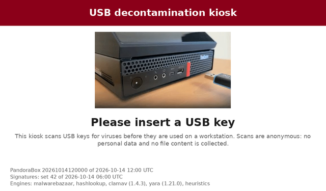
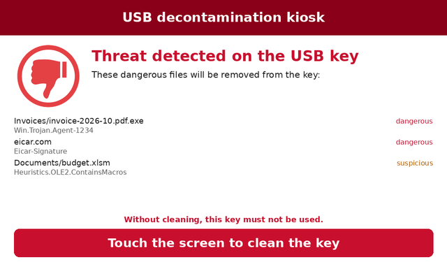

Kiosk interface¶
The kiosk shows what it does on its touch screen: waiting for a key, scan progress, the dangerous files found, then the result. There are no buttons: the only action of the user is a touch anywhere on the screen to start the cleaning, once the files to remove are listed.
| Waiting for a key | Scan in progress |
|---|---|
 |
 |
| Threats found: touch to clean | Key cleaned |
 |
 |
Screens¶
| Screen | When |
|---|---|
ready |
Waiting for a key (animation of a key inserted), with the versions of the kiosk and of its signatures |
unavailable |
No valid signatures: the kiosk only accepts a signature update device |
scanning |
Device, progress bar, files scanned out of the total, threats found so far, the latest files scanned and their verdict |
threats |
The files that will be removed, with their detection; a touch on the screen cleans the key |
cleaning |
The files being removed |
clean |
No threat found: the key can be used |
warning |
Suspicious or not fully scanned files are kept (scan.suspicious or scan.on_error set to warn) |
cleaned |
The removed files |
not_cleaned |
The files that could not be removed, or the key was removed before the cleaning |
not_verified |
Files that could not be scanned (scan.on_error = "block"): the key must not be used |
error |
The key could not be mounted or read |
service |
Maintenance, signature or image update device: the messages of the kiosk |
A result (scan, maintenance or update device) stays on the screen until the
key is removed, then display.return_seconds more (5 seconds by default)
before the waiting screen. Inserting another key shows its scan at once.
How it is drawn¶
The screens are drawn with Pillow and copied
into the Linux framebuffer (display.framebuffer, /dev/fb0): no display
server, no browser, nothing that listens on a socket. The kiosk puts its
console (tty1) in graphics mode, so that the kernel does not draw text over
the screens. Touches are read from /dev/input/mice (the touch screen is
seen as a mouse; a mouse allowed by USBGuard clicks instead, see
image.md), only while the kiosk
waits for the cleaning to be confirmed. File names and device labels come from the key: they are made
printable (control and invisible formatting characters replaced) and cut to
their place, never interpreted. The graphical interface needs a 24 or 32 bits
per pixel framebuffer (Intel, efifb, QEMU).
The configuration selects it with kiosk.interface = "framebuffer" (the
default); curses is the text interface (administrator mode), console
prints plain text (development).
Customization¶
An administrator adapts the interface to the organization: logo, colors, texts of every screen and their language, images. The image is read-only (dm-verity): the theme is part of it, and a change needs a new image (or an image update).
Configuration¶
In packaging/pandora-box.toml, section [display]:
[display]
# Theme folder, installed in the image from image/theme/
theme = "/usr/share/pandora-box/theme"
# Language of the texts: "en", "fr", or a language the theme adds
language = "fr"
# Seconds before the waiting screen, once the key is removed
return_seconds = 5.0
Theme folder¶
Create image/theme/ in the repository: the image build copies it to
/usr/share/pandora-box/theme and checks it (the build fails on an invalid
theme). The folder holds a theme.toml and the files it names. Every key is
optional: a key of the theme replaces the one of the built-in theme
(src/pandora_box/ui/theme/theme.toml, which lists them all), the others are
kept.
image/theme/
├── theme.toml
└── logo.png
# Logo of the organization, on the left of the header (PNG or JPEG)
logo = "logo.png"
# TrueType fonts, files of the folder (default: DejaVu Sans)
# font = "OpenSans-Regular.ttf"
# font_bold = "OpenSans-Bold.ttf"
# Larger texts, from 1 (default) to 1.5
# text_scale = 1.25
[colors]
header = "#003366"
progress = "#003366"
[texts.fr]
title = "Hôpital de Mons - Borne antivirus"
footer = "Service informatique - poste 1234"
insert_help = "Analysez toute clé USB avant de l'utiliser sur un poste de l'hôpital."
clean_help = "Cette clé peut être utilisée. N'oubliez pas de la retirer."
Texts¶
Every text shown on the screen is a key of [texts.<language>]: the title of
the header, the footer, the title and the help of each screen, the verdicts of
the files. Some texts have placeholders, replaced by the kiosk:
| Text | Placeholders |
|---|---|
scan_progress |
{done}, {total} |
scan_threats, cleaned_help, more_files |
{count} |
device_usage |
{size}, {used} |
A text with an unknown placeholder or an unknown key is refused. A theme may
add a language: [texts.de] with the texts it translates, the others are in
English; then set display.language = "de".
The messages of the service, error, unavailable and cleaning screens
are those of the kiosk logs (in English): they are meant for the
administrator, and are not part of the theme.
Colors¶
header, header_text, background, text, muted (help, details),
clean, threat, warning, progress, progress_background: "#rrggbb".
A theme whose texts would be hard to read is refused (see
Accessibility).
Images¶
[images]: insert (animation of the waiting screen, one image per second),
busy (animation while the kiosk works), clean, threat, error (icons of
the results). PNG (with transparency) or JPEG, at most 4096 pixels. The
built-in images come from the first version of PandoraBox.
Accessibility¶
- Contrast: every text must stand out from its background at the WCAG
2.1 AA level, or the theme is refused with the colors and ratio at fault:
4.5:1 for
text,muted,clean,threatandwarningonbackground; 3:1 forheader_textonheader,threatandprogress(large bold texts: title, banner, percentage) and forprogressonprogress_background(the progress bar). The built-in theme passes. - Text size:
text_scaleenlarges every text, from 1 (default) to 1.5; the lines, rows and bars follow, the icons and the animation of the waiting screen shrink to make room. The smallest built-in text is 16 pixels on the 7-inch screen (1024x600). Long titles wrap; when space runs short, a list always shows its first file and the number of the others. The tests check every screen in English and French, at three screen sizes and three text sizes: no text leaves the screen or overlaps another one. - No color alone: each result has its title, its icon and, for each file, its verdict in words; the whole screen is the button to clean.
To try a text size without changing the theme:
pandora-box-theme preview image/theme /tmp/preview --text-scale 1.5.
Check and preview a theme¶
Without a kiosk, on the development computer:
pandora-box-theme check image/theme
pandora-box-theme preview image/theme /tmp/preview # every language
pandora-box-theme preview image/theme /tmp/preview --language fr --size 800x480
preview draws every screen, with made-up files, into PNG files.
pandora-box --check-config also checks the theme of the configuration.